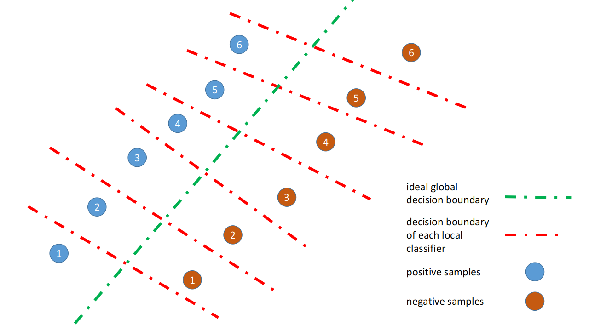
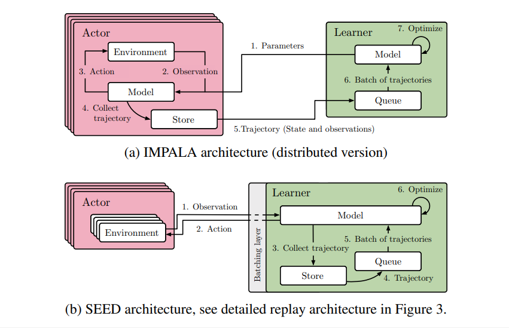
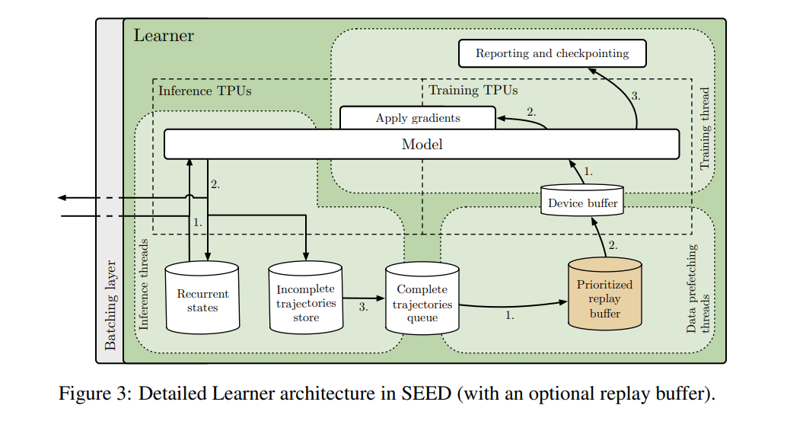

收集、学习、分析近年来优秀的分布式机器学习工作
本文不讨论单机环境上开多线程共享stack这种“虚假”的分布式：任何一个分布式算法，如果没有办法部署到真正的集群/客户端/云平台，并对scalability有较好的解决方案，即可被定义为“虚假”的分布式算法
1. Federated learning
1.1. Background
2018年5月28日，欧盟发布了the General Data Protection Regulation (GDPR)，该法律主要面向用户数据隐私问题，对互联网公司对用户隐私数据的使用出台了严格的法律限制，违反者将被处以高额罚金，媒体称其为“史上最严厉最翔实”的保护用户数据安全的法律。该法律一经出台，以Facebook为首的一众公司股票连日下跌，扎克伯格连续两天现身美国国会参议院的听证会，民间拍手称快者有之，嗟乎欧洲AI发展穷途末路者有之，暗喜中国AI可弯道超车者有之，借机推销商业概念或自己组工作者亦有之
为什么很多互联网公司的AI团队如丧考妣？按照GDPR的规定，互联网公司要想使用用户数据做模型训练，必须取得数据集中的每一名用户的同意，对于Google和Facebook这些用户过亿的公司来说，这样的规定简直是要了他们的老命
这样严格的法律规定下也催生了很多新的思考：如果我们没有办法拿到用户数据（或者如果我们没有办法拿到大量的用户数据），是不是机器学习这条路就完全走不通了呢？就没有一种办法，可以让互联网公司在完全不接触任何实际用户数据的情况下训练模型吗？
1.2. FL Framework
FL是Google给出的一个解决方案，最早出自Google AI的blog文章：Federated Learning: Collaborative Machine Learning without Centralized Training Data，整体思路很清晰而且很fancy：要使用FL方法训练一个模型，大概可以分为以下几步：
- server端初始化模型；
- 按照某种随机方式选取选取部分用户，经过用户移动端的app，server将模型发送到每个用户的手机/PC上；
- 每个用户的手机上，当满足一定条件时（比如用户客户端本地的数据达到一定数量、已连接wifi且正在充电中），拿客户端本地的用户数据训练模型；
- 客户端向server上传模型，server段对收集到的N多用户模型参数进行聚合（Google的博客和paper里一般叫aggregation），比如最简单也使用最广泛的一种聚合方式就是所有用户的模型参数求平均，叫做FedAvg；
- 重复步骤2-4，直至模型收敛；
1.3. Challenges and technical details
整个idea看起来很fancy，给人一种“这tm都可以”的感觉，实际上具体到整个系统的technical details上都是问题，FL可以看做是整合了很多不同领域的思想，实现整个系统需要涉及到很多方面的领域知识：
- Machine learning, distributed machine learning
- Privacy, information security
- Distributed systems
- Numerical optimization for deep learning on mobile devices or CPU machines
涉及到具体的technical details，会有很多细节问题值得商榷：
- Model training on mobile devices: 既然要在移动端设备上做本地训练，那么网络一定不能大，不能指望在移动端设备上跑BERT或者ResNet-152
- Convergence on non-IID data: 看到FL的idea就觉得这居然都能收敛实在是非常反直觉的事情。知乎也有此方向的大佬指出，目前ArXiv上已有两篇有关converence on non-iid data的工作，两篇文章都说明模型在non-iid数据上的收敛性是成问题的，详见 On the Convergence of FedAvg on Non-IID Data 和 Federated Learning with Non-IID Data
- Security: 这方面我不是很懂，Google称为了避免客户端上传模型时泄露隐私，每个用户上传的模型都使用了连server都没有的秘钥加密，通过secure aggregation技术，可以使得这些用户模型聚合之后得到所有用户模型的均值。问题在于这里的secure aggregation貌似不是100%无损准确地恢复，而是给了一个数学期望意义上的保证，那么用了这个secure aggregation以后，模型训练有多大程度上受到影响就变成了一个值得商榷的问题（毕竟之前model quantization的研究中即使只是把
float_32t换成int_16t都会让模型出不少问题） - Robustness: 之前Robustnesｓ ML的研究中就有一类攻击方法叫做data poisoning，指的是训练数据中混入的少量恶意样本足以使得模型不收敛或收敛至完全错误的决策边界。对于新兴的FL工业应用来说，谈adversarial examples攻防或许有点为时尚早，但FL的分布式训练系统对outlier用户的robustness绝对是一个值得讨论的问题，如果存在一两个outlier用户就足以毁掉整个模型的训练过程，那么FL系统的应用就比较困难了

2. Reinforcement learning
2.1. A3C
出自ICML 2016的paper: Asynchronous Methods for Deep Reinforcement Learning，曾在相当一段时间里主宰了Atari任务上的state-of-the-art
作者通过多线程的方式来实现并行：每个线程有一份独立的policy参数以及一个游戏环境，这个policy会和环境交互产生数据来计算梯度。在跑每个episode之前，这个policy都会从parameter server上拉取最新的模型参数，然后在跑完每个episode之后计算梯度，把梯度上传到parameter server做异步梯度更新。在当时看来，这个算法不仅能极大提升训练速度，而且效果也比当时的单机DQN版本好很多
Pros:
- 站在2020年当前distributed RL的视角来看，这篇工作在并行化与分布式处理的细节方面相对比较粗糙，但无疑为distributed RL中大力出奇迹的思想开了先河，现在大部分的distributed RL算法视线中都能看到A3C的影子。最关键的启发在于：A3C首创采用多个CPU机器做环境探索，各台机器之间可以异步独立工作，这很大程度上缓解了RL算法在CPU上采样与GPU上优化模型之间的延迟问题，并且加快了复杂环境中探索环境的速度
Cons:
- 异步梯度还是同步梯度，这是一个问题：一般来说异步梯度很不稳定，甚至CPU机器与GPU机器配比不合适也会影响到模型收敛；但使用同步梯度意味着GPU机器可能需要花费大量的时间忙等CPU机器传梯度，而且同步时还需要考虑万一某台CPU机器挂掉的可能性；
- 整个系统的io成本实际上是比较高的：第一，CPU机器在每个episode开始时都会向GPU机器请求更新模型文件；第二：CPU机器需要自己根据模型和样本算梯度，然后传给GPU机器；以上两点，如果一个模型的参数有100MB (which is common for industrial RL models)，那么每一次io都是100MB的数据传输（作为对比参考，一般在rpc系统里超500KB就算比较大型的数据包了）
- 整个系统并没有充分发挥CPU与GPU的性能：对于GPU来讲，大量CPU机器异步请求模型文件，意味着GPU机器在迭代模型的同时必须不停地把模型落盘；对于CPU来讲，本身CPU其实并不适合干神经网络inference的活，A3C的系统却要求每台CPU机器自己去跑BP算梯度；这两点是比较明显的性能浪费
2.2. IMPALA
Pros:
- Trajectory-based optimization
- V-trace off-policy correction
Cons:
- 讲真IMPALA文章里放出来的结果非常漂亮，如果没亲自用过IMPALA的话大概不可能挑出什么真的毛病来；站在2020年的视角马后炮，从SEED反推，可以看出IMPALA在tensorflow模型静态图优化方面做的已经非常出色了，但针对集群和TPU尚存在不少可优化的空间
2.3. APE-X
出自DeepMind的论文Distributed Prioritized Experience Replay，整篇文章比较偏工程，类似于Rainbow DQN，APE-X结合了之前若干重要的DQN文章的idea，包括
- Dueling DQN: 将整个网络结构设计成两个子网络的相加，语义上一个网络代表value函数，另一个网络代表advantage函数，为了避免歧义，定义advantage函数的输出均值为0
- Double DQN：为了避免在Bellman迭代时产生value overestimation，采用两个Q网络并采用两个网络中预测Q值较小的作为target-Q value estimation
- N-step Bellman return: 在Q-learning的框架下，采用N-step Bellman return优化模型在理论上是存在问题的（主要问题在于Q-learning中Q-function学习的是greedy policy的value estimation，而greedy policy是对于每一步而言的）；然而现实场景下N-step Bellman return往往能够得到比较好的效果，尤其是对于像Atari这种相邻frame差别可以非常小的场景而言更加如此
- Distributed prioritized experience replay，待补充
Cons: Novelty is limited… A bit more like a combination of several previous works… And the fact that using distributed prioritized experience replay makes better performance is not surprising, since distributed PER provides stronger exploration ability, and alleviates non-iid-ness of the training data
2.4. R2D2
出自ICLR 2019 DeepMind的工作：Recurrent Experience Replay in Distributed Reinforcement Learning，可以看做是APE-X的改进版，主要的改进包括：
- Propose to use LSTM to learn a good representation from sequence of $(s_0, a_0, r_0, s_1, a_1, r_1, …, s_T, a_T, r_T)$ samples
- Propose the burn-in heuristic to generate the initialization state for the LSTM, sufficient experimental results have demonstrated the effectiveness of the BURN-IN heuristic
文章的一大亮点在于作者用详细的实验数据比较了使用zero_state或saved_recurrent_state作为LSTM的初始state_initialization的优缺点：
zero_state: 由于本文引入LSTM的目的在于从时序化的序列数据中学习state的representation，采用zero-state作为输入无疑会解耦合之前的state与当前sequence的联系，除非LSTM够长，否则肯定会影响效果（但是LSTM太长又容易导致梯度爆炸/消失之类的烦心事），文中的实验数据也表明zero-state的效果最差saved_recurrent_state: 采用时序意义上，上一个sequence输入LSTM得到的final_state作为初始state，由actor输出然后保存在replay memory中。作者指出，这样做的问题在于representation shift现象，off-policy训练时保存在replay buffer里的hidden state有可能是很久以前的，在被采样到之前，即使LSTM的参数只发生了微小的变化，只要LSTM够长，最终LSTM输出的hidden state就有可能相差很远，这意味着过去保存在replay buffer里的hidden state有可能已经不适用于现在的LSTM模型burn_in_state: 比如说sequence长度是80，可以用前40做burn-in，LSTM的第40个hidden state输出作为初始state，用BPTT参数更新时LSTM的前40个循环不参与求梯度（这个代码上应该怎么实现？）
2.5. Seed RL
出自ICLR 2020，Google大大联合DeepMind又一篇有钱任性的文章：SEED RL: Scalable and Efficient Deep-RL with Accelerated Central Inference，abstract里是这样介绍SEED的
SEED adopts two state of the art distributed algorithms, IMPALA/V-trace (policy gradients) and R2D2 (Q-learning), and is evaluated on Atari-57, DeepMind Lab and Google Research Football. We improve the state of the art on Football and are able to reach state of the art on Atari-57 three times faster in wall-time. For the scenarios we consider, a 40% to 80% cost reduction for running experiments is achieved.


2.6. Dreamer
Yet another paper from Google Brain，出自ICLR-2020 Dream to Control: Learning Behaviors by Latent Imagination,与上面介绍的若干方法最大的不同点在于dreamer是一个基于model-based RL方法的distributed RL系统，前身PlaNet出自 Learning latent dynamics for planning from pixels
References
- [zhihu] 联邦学习在机器学习领域有什么独立存在的价值?
- [Ant AI] 共享学习：蚂蚁金服数据孤岛解决方案
- [CMU] Federated Learning: Challenges, Methods, and Future Directions
- [Google AI] 联盟学习到底是什么？我们画了部漫画……
- [zhihu] 强化学习并行训练论文合集